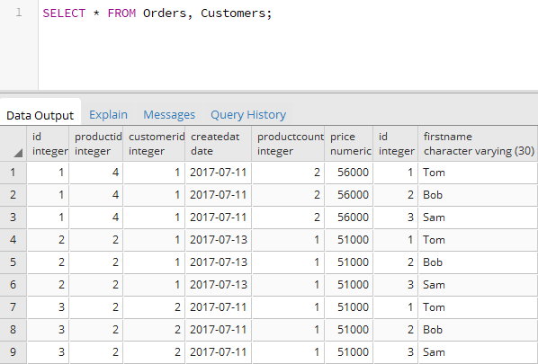
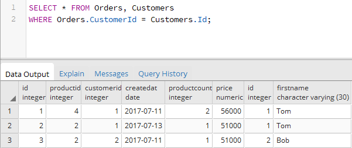
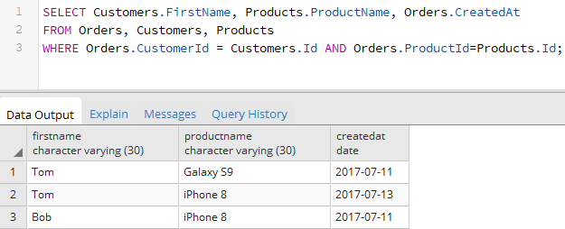

Вернуться на главную страницу →
Вернуться на главную страницу →
Соединение таблиц
Неявное соединение таблиц
Нередко возникает ситуация, когда нам надо получить данные из нескольких таблиц. Для соединения данных из разных таблиц можно использовать команду SELECT. Например, пусть имеются следующие таблицы, которые связаны между собой связями:
В данном случае таблицы Customers и Products связаны с таблицей Orders связью один ко многим. Таблица Orders в виде внешних ключей ProductId и CustomerId содержит ссылки на столбцы Id из соответственно таблиц Products и Customers. Также она хранит количество купленного товара (ProductCount) и и по какой цене он был куплен (Price). И кроме того, таблицы также хранит в виде столбца CreatedAt дату покупки.
Пусть эти таблицы будут содержать следующие данные:
Теперь соединим две таблицы Orders и Customers:
При такой выборке для каждая строка из таблицы Orders будет совмещаться с каждой строкой из таблицы Customers. То есть, получится перекрестное соединение. Например, в Orders три строки, а в Customers то же три строки, значит мы получим 3 * 3 = 9 строк:
То есть в данном случае мы получаем прямое (декартово) произведение двух групп. Однако вряд ли такой результат можно назвать желаемым. Тем более каждый заказ из Orders связан с конкретным покупателем из Customers, а не со всеми возможными покупателями.
Для решения этой задачи необходимо использовать выражение WHERE и фильтровать строки при условии, что поле CustomerId из Orders соответствует полю Id из Customers:
Теперь объединим данные по трем таблицам Orders, Customers и Proucts. То есть получим все заказы и добавим информацию по клиенту и связанному товару:
Так как здесь соединяются три таблицы, то необходимо применить как минимум два условия. Ключевой таблицей остается Orders, из которой извлекаются все заказы, а затем к ней подсоединяются данные по клиенту по условию Orders.CustomerId = Customers.Id и данные по товару по условию Orders.ProductId=Products.Id
Поскольку в данном случае названия таблиц сильно увеличивают код, то мы его можем сократить за счет использования псевдонимов таблиц:
Если необходимо при использовании псевдонима выбрать все столбцы из определенной таблицы, то можно использовать звездочку: